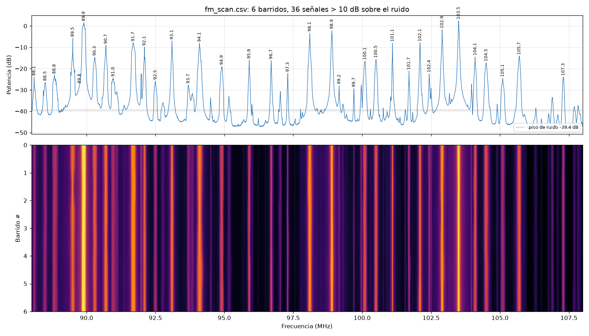
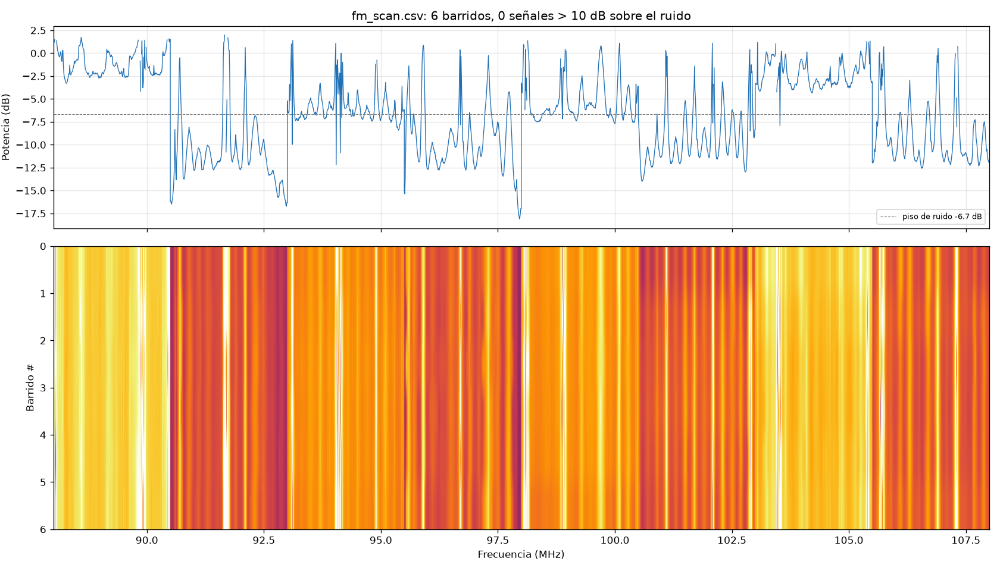

2. Barrido de banda ancha con rtl_power (ejemplo: FM 88–108 MHz)
El dongle solo ve unos 2.4 MHz a la vez. rtl_power salta de una ventana a otra y arma
un espectro ancho. No es en tiempo real, pero sirve para ver una banda completa.
Paso 1: cerrar SDR# y SDR++
Solo un programa puede usar el dongle a la vez.
Paso 2: ejecutar el barrido
Desde la carpeta del proyecto (C:\...\rtl-sdr_v4l):
drivers/rtlsdrblog-V1.4.0/x64/rtl_power.exe -f 88M:108M:10k -g 0 -c 25% -i 10 -e 1m scans/fm_scan.csv
| Opción | Significado |
|---|---|
-f 88M:108M:10k |
De 88 a 108 MHz, con resolución de 10 kHz |
-g 0 |
Ganancia del tuner en dB. En Santiago, usa 0 para la banda FM (ver abajo) |
-c 25% |
Descarta el 25% de los bordes de cada salto, donde el filtro atenúa |
-i 10 |
Una línea (barrido completo) cada 10 segundos |
-e 1m |
Termina después de 1 minuto (30s, 5m, 1h...) |
Al final imprime User cancel, exiting...: es normal, significa que terminó el tiempo de -e.
Paso 3: graficar
python tools/graficar_power.py scans/fm_scan.csv 10
Crea scans/fm_scan.png (espectro promedio + waterfall) y lista las señales que superan
el piso de ruido en más de 10 dB (el segundo argumento).
Resultado del 2026-10-02 (Santiago, ganancia 0 dB)

Se detectaron 36 emisoras. Las más fuertes son 103.5, 89.9, 102.9, 98.9 y 98.1 MHz. La 102.1 MHz, la que escuchabas en SDR#, aparece a +32 dB sobre el ruido.
Por qué ganancia 0 y no 30
Primero se ejecutó el comando con -g 30 y sin -c. El resultado está en
scans/fm_scan_g30_saturado.png:

- Qué se ve: escalones cada 2.5 MHz, porque cada salto tiene un piso distinto, y la detección encuentra 0 emisoras claras.
- Por qué pasa: las FM locales son tan fuertes que, con 30 dB, saturan el ADC de 8 bits. Eso levanta el ruido de todo el salto.
- Cómo detectarlo: si al subir la ganancia el piso sube tanto como las señales, o aparecen escalones o señales fantasma, baja la ganancia.
Otras bandas de ejemplo
drivers/rtlsdrblog-V1.4.0/x64/rtl_power.exe -f 118M:137M:5k -g 30 -c 25% -i 10 -e 10m scans/aviacion.csv
drivers/rtlsdrblog-V1.4.0/x64/rtl_power.exe -f 144M:148M:2k -g 30 -c 25% -i 10 -e 10m scans/2m.csv
drivers/rtlsdrblog-V1.4.0/x64/rtl_power.exe -f 400M:470M:25k -g 30 -c 25% -i 30 -e 15m scans/uhf.csv
Fuera de la banda FM se puede usar más ganancia (20–40 dB). Si ves escalones, bájala.
Las señales intermitentes (aviación, radioaficionados) se ven mejor en el waterfall con -e largo.